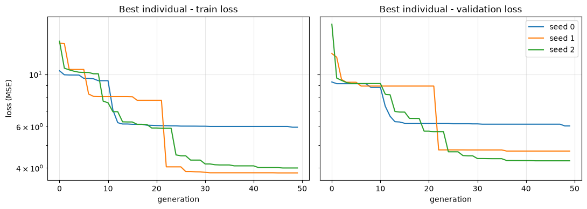
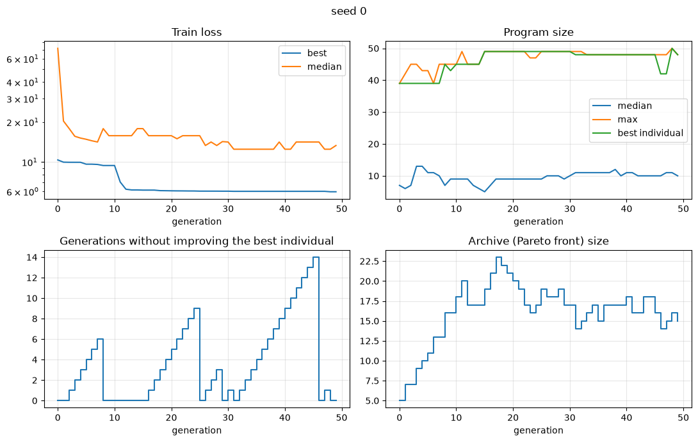
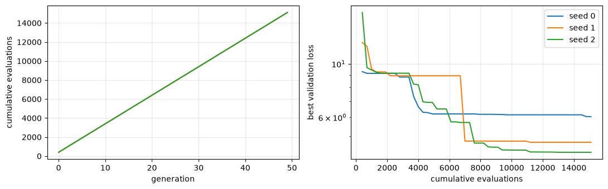
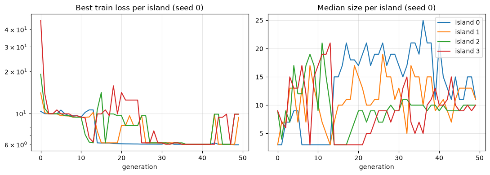
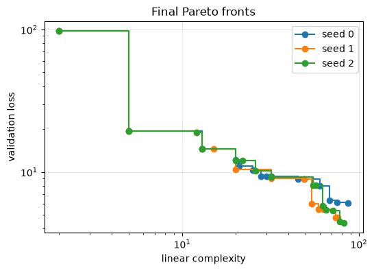
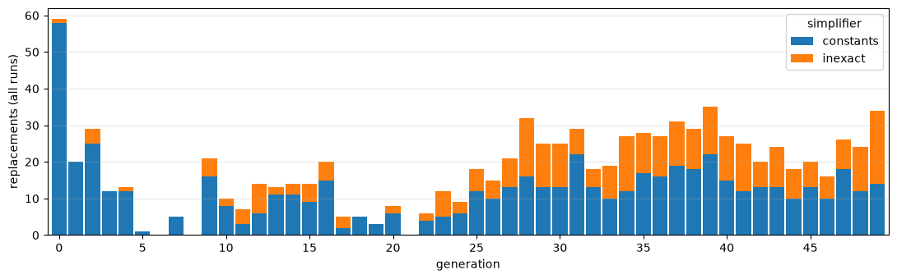

Logging the evolution
Set the logfile parameter to a path, and every call to fit will write:
file |
content |
|---|---|
|
one row per generation: losses, sizes, stall count, archive size, number of evaluations, and the best expression |
|
the same statistics, one row per island and generation |
|
every replacement performed by the simplifiers ( |
|
the expressions stored by the inexact simplifier, at the end of the run (only with |
|
one JSON object per run, with the seed and all parameters |
All files are valid CSV (expressions are quoted) and have a run_id column. Files are
opened in append mode, so fitting several times with the same logfile adds rows
instead of overwriting them. Brush refuses to append to a file that was written with
different columns (for example, by an older version).
import os, shutil
import pandas as pd
import matplotlib.pyplot as plt
from pybrush import BrushRegressor
LOG_DIR = "logs"
shutil.rmtree(LOG_DIR, ignore_errors=True)
os.makedirs(LOG_DIR, exist_ok=True)
df = pd.read_csv("../examples/datasets/d_enc.csv")
X = df.drop(columns="label")
y = df["label"]
pd.set_option("display.max_colwidth", 100)
Generating the log files
We fit three seeds and write all of them to the same logfile; the run_id
column tells the runs apart.
LOGFILE = os.path.join(LOG_DIR, "brush.csv")
seeds = [0, 1, 2]
estimators = {}
for seed in seeds:
est = BrushRegressor(
functions=["Add", "Sub", "Mul", "Div", "Sin", "Cos", "Exp", "Logabs", "Sqrtabs"],
max_gens=50,
pop_size=100,
num_islands=4,
max_size=50,
max_depth=6,
objectives=["scorer", "linear_complexity"],
inexact_simplification=True,
logfile=LOGFILE, # This toggle on the generation of logfiles
random_state=seed, # Brush has total random seed control
verbosity=0,
)
est.fit(X, y)
estimators[seed] = est
# Files were generated after fitting the estimator
sorted(os.listdir(LOG_DIR))
['brush.csv',
'brush.csv_islands.csv',
'brush.csv_runs.jsonl',
'brush.csv_simplification_table',
'brush.csv_simplifications.csv']
Run metadata
_runs.jsonl has one line per call to fit, with the full set of parameters.
runs = pd.json_normalize(pd.read_json(LOGFILE + "_runs.jsonl", lines=True).to_dict("records"))
runs[["run_id", "random_state", "params.pop_size", "params.max_gens", "params.num_islands", "params.scorer"]]
| run_id | random_state | params.pop_size | params.max_gens | params.num_islands | params.scorer | |
|---|---|---|---|---|---|---|
| 0 | 20260923T121716.761-c517 | 0 | 100 | 50 | 4 | mse |
| 1 | 20260923T121720.173-a13f | 1 | 100 | 50 | 4 | mse |
| 2 | 20260923T121723.647-be9d | 2 | 100 | 50 | 4 | mse |
The evolution log
Each row is one generation of one run. best_* refer to the best individual (chosen on
the validation partition), and med_*/max_* summarize the whole population.
n_evaluations is cumulative. Models that survived across generations are not
refitted thus not counted towards the number of evaluations.
The number of evaluations refers to the number of times a program was fitted
(had it’s weights optimized). It does not reflect the number of optimization
steps performed for each individual.
log = pd.read_csv(LOGFILE)
print("columns:", list(log.columns))
log.head()
columns: ['run_id', 'random_state', 'generation', 'time', 'best_score', 'best_score_val', 'med_score', 'med_score_val', 'med_size', 'med_complexity', 'max_size', 'max_complexity', 'best_size', 'best_complexity', 'stall_count', 'archive_size', 'n_evaluations', 'best_model']
| run_id | random_state | generation | time | best_score | best_score_val | med_score | med_score_val | med_size | med_complexity | max_size | max_complexity | best_size | best_complexity | stall_count | archive_size | n_evaluations | best_model | |
|---|---|---|---|---|---|---|---|---|---|---|---|---|---|---|---|---|---|---|
| 0 | 20260923T121716.761-c517 | 0 | 0 | 0.068071 | 10.350908 | 9.278577 | 71.704758 | 77.782562 | 7 | 32 | 39 | 37237 | 39 | 5225 | 0 | 5 | 400 | 1.62*Add(0.32*Add(109.51*Div(109.30*x3,200.26*Add(225.90*x2,-788.44*Sqrtabs(-3332.07*x4))),31.95... |
| 1 | 20260923T121716.761-c517 | 0 | 1 | 0.126026 | 9.956403 | 9.127022 | 20.323715 | 21.707689 | 6 | 25 | 42 | 37237 | 39 | 5225 | 0 | 7 | 700 | 1.62*Add(0.32*Add(67.72*Div(67.59*x3,302.11*Add(227.53*x2,-783.07*Sqrtabs(-3286.79*x4))),32.25*x... |
| 2 | 20260923T121716.761-c517 | 0 | 2 | 0.189985 | 9.936137 | 9.127022 | 17.851387 | 19.497444 | 7 | 27 | 45 | 8990 | 39 | 5225 | 1 | 7 | 1000 | 1.62*Add(0.32*Add(67.72*Div(67.59*x3,302.11*Add(227.53*x2,-783.07*Sqrtabs(-3286.79*x4))),32.25*x... |
| 3 | 20260923T121716.761-c517 | 0 | 3 | 0.244779 | 9.934284 | 9.127022 | 15.598775 | 16.937330 | 13 | 95 | 45 | 8990 | 39 | 5225 | 2 | 9 | 1300 | 1.62*Add(0.32*Add(67.72*Div(67.59*x3,302.11*Add(227.53*x2,-783.07*Sqrtabs(-3286.79*x4))),32.25*x... |
| 4 | 20260923T121716.761-c517 | 0 | 4 | 0.302656 | 9.932689 | 9.127022 | 15.123131 | 16.591620 | 13 | 107 | 43 | 8990 | 39 | 5225 | 3 | 10 | 1600 | 1.62*Add(0.32*Add(67.72*Div(67.59*x3,302.11*Add(227.53*x2,-783.07*Sqrtabs(-3286.79*x4))),32.25*x... |
# number of generations, best metric and final expression of each run
summary = log.groupby("random_state").agg(
n_generations=("generation", "count"),
total_time=("time", "last"),
n_evaluations=("n_evaluations", "last"),
best_score=("best_score", "last"),
best_score_val=("best_score_val", "last"),
archive_size=("archive_size", "last"),
best_model=("best_model", "last"),
)
summary
| n_generations | total_time | n_evaluations | best_score | best_score_val | archive_size | best_model | |
|---|---|---|---|---|---|---|---|
| random_state | |||||||
| 0 | 50 | 3.390770 | 15100 | 5.959468 | 6.035597 | 15 | Add(0.19*Add(812.02*Div(6852.51*x0,4929.73*Add(185.08*x2,-422.56*Sqrtabs(-3222.37*x4))),82.75*x6... |
| 1 | 50 | 3.447640 | 15100 | 3.812312 | 4.720665 | 13 | Div(1.39*Exp(0.17*Sin(0.97*Sub(1.84*Add(1.00*x2,-13.06),0.96*x1))),0.56*Div(Sub(0.97*Sqrtabs(Sqr... |
| 2 | 50 | 3.329469 | 15100 | 4.000235 | 4.290797 | 15 | 0.00*Sub(Add(24.98*Mul(2.71*x4,14.29*x6),1387.94*Cos(1.00*Sub(1.56*x4,1.00*Mul(x2,1.00*x1)))),0.... |
Convergence
fig, axs = plt.subplots(1, 2, figsize=(11, 4), sharey=True)
for seed, l in log.groupby("random_state"):
axs[0].plot(l["generation"], l["best_score"], label=f"seed {seed}")
axs[1].plot(l["generation"], l["best_score_val"], label=f"seed {seed}")
axs[0].set_title("Best individual - train loss")
axs[1].set_title("Best individual - validation loss")
for ax in axs:
ax.set_xlabel("generation")
ax.set_yscale("log")
ax.grid(alpha=0.3)
axs[0].set_ylabel("loss (MSE)")
axs[1].legend()
plt.tight_layout()

l = log[log["random_state"] == 0]
fig, axs = plt.subplots(2, 2, figsize=(11, 7))
axs[0, 0].plot(l["generation"], l["best_score"], label="best")
axs[0, 0].plot(l["generation"], l["med_score"], label="median")
axs[0, 0].set_yscale("log")
axs[0, 0].set_title("Train loss")
axs[0, 0].legend()
axs[0, 1].plot(l["generation"], l["med_size"], label="median")
axs[0, 1].plot(l["generation"], l["max_size"], label="max")
axs[0, 1].plot(l["generation"], l["best_size"], label="best individual")
axs[0, 1].set_title("Program size")
axs[0, 1].legend()
axs[1, 0].plot(l["generation"], l["stall_count"], drawstyle="steps-post")
axs[1, 0].set_title("Generations without improving the best individual")
axs[1, 1].plot(l["generation"], l["archive_size"], drawstyle="steps-post")
axs[1, 1].set_title("Archive (Pareto front) size")
for ax in axs.flat:
ax.set_xlabel("generation")
ax.grid(alpha=0.3)
fig.suptitle("seed 0")
plt.tight_layout()

# cost of the search
fig, axs = plt.subplots(1, 2, figsize=(11, 3.5))
for seed, l in log.groupby("random_state"):
axs[0].plot(l["generation"], l["n_evaluations"], label=f"seed {seed}")
axs[1].plot(l["n_evaluations"], l["best_score_val"], label=f"seed {seed}")
axs[0].set_xlabel("generation")
axs[0].set_ylabel("cumulative evaluations")
axs[1].set_xlabel("cumulative evaluations")
axs[1].set_ylabel("best validation loss")
axs[1].set_yscale("log")
for ax in axs:
ax.grid(alpha=0.3)
axs[1].legend()
plt.tight_layout()

Best expression over the generations
The best_model column shows how the best individual changed. We keep only the
generations where it changed.
l = log[log["random_state"] == 0]
changes = l[l["best_model"] != l["best_model"].shift()]
changes[["generation", "best_score_val", "best_size", "best_model"]]
| generation | best_score_val | best_size | best_model | |
|---|---|---|---|---|
| 0 | 0 | 9.278577 | 39 | 1.62*Add(0.32*Add(109.51*Div(109.30*x3,200.26*Add(225.90*x2,-788.44*Sqrtabs(-3332.07*x4))),31.95... |
| 1 | 1 | 9.127022 | 39 | 1.62*Add(0.32*Add(67.72*Div(67.59*x3,302.11*Add(227.53*x2,-783.07*Sqrtabs(-3286.79*x4))),32.25*x... |
| 8 | 8 | 8.810316 | 45 | 0.69*Add(0.43*Add(970.14*Div(48.11*x3,-381.89*Add(230.46*x2,-762.89*Sqrtabs(-3304.37*x4))),55.19... |
| 9 | 9 | 8.810287 | 43 | 0.70*Add(23.25*Add(332.12*Div(16.47*x3,-2464.26*Add(231.03*x2,-763.86*Sqrtabs(-3312.69*x4))),x6)... |
| 10 | 10 | 8.810237 | 45 | 0.68*Add(0.43*Add(965.64*Div(48.34*x3,-383.90*Add(230.41*x2,-762.89*Sqrtabs(-3302.95*x4))),54.92... |
| 11 | 11 | 7.319740 | 45 | 0.68*Add(0.43*Add(2659.25*Div(16753.25*x0,3640.52*Add(185.45*x2,-421.66*Sqrtabs(-3207.36*x4))),5... |
| 12 | 12 | 6.632836 | 45 | 0.67*Add(0.41*Add(1756.35*Div(11066.24*x0,5321.64*Add(185.13*x2,-422.40*Sqrtabs(-3218.61*x4))),5... |
| 13 | 13 | 6.288856 | 45 | 0.68*Add(0.40*Add(1699.36*Div(10700.80*x0,5499.05*Add(185.11*x2,-422.43*Sqrtabs(-3219.07*x4))),5... |
| 14 | 14 | 6.271890 | 45 | 0.36*Add(4.50*Add(-1149.91*Div(-5750.37*x0,11909.45*Add(185.11*x2,-422.35*Sqrtabs(-3220.11*x4)))... |
| 15 | 15 | 6.192916 | 49 | 0.45*Add(0.22*Add(2058.68*Div(16604.21*x0,4962.30*Add(185.08*x2,-422.45*Sqrtabs(-3219.49*x4))),0... |
| 25 | 25 | 6.168351 | 49 | 0.27*Add(0.54*Add(1827.21*Div(12099.95*x0,4751.91*Add(185.10*x2,-422.49*Sqrtabs(-3219.78*x4))),1... |
| 29 | 29 | 6.158276 | 49 | 0.22*Add(0.57*Add(1877.77*Div(12344.38*x0,4546.73*Add(185.09*x2,-422.49*Sqrtabs(-3219.77*x4))),1... |
| 31 | 31 | 6.138827 | 48 | 1.92*Add(0.17*Add(1274.97*Div(9031.33*x0,5986.33*Add(185.10*x2,-422.48*Sqrtabs(-3220.48*x4))),4.... |
| 46 | 46 | 6.138803 | 42 | 1.54*Add(0.20*Add(1276.03*Div(9249.64*x0,5857.35*Add(185.10*x2,-422.48*Sqrtabs(-3220.58*x4))),53... |
| 48 | 48 | 6.035705 | 50 | 1.75*Add(0.16*Add(892.99*Div(6962.25*x0,8090.15*Add(185.08*x2,-422.56*Sqrtabs(-3222.30*x4))),56.... |
| 49 | 49 | 6.035597 | 48 | Add(0.19*Add(812.02*Div(6852.51*x0,4929.73*Add(185.08*x2,-422.56*Sqrtabs(-3222.37*x4))),82.75*x6... |
Per-island statistics
islands = pd.read_csv(LOGFILE + "_islands.csv")
print("columns:", list(islands.columns))
isl = islands[islands["run_id"] == runs.loc[runs["random_state"] == 0, "run_id"].iloc[0]]
fig, axs = plt.subplots(1, 2, figsize=(11, 4))
for island, g in isl.groupby("island"):
axs[0].plot(g["generation"], g["best_score"], label=f"island {island}")
axs[1].plot(g["generation"], g["med_size"], label=f"island {island}")
axs[0].set_title("Best train loss per island (seed 0)")
axs[0].set_yscale("log")
axs[1].set_title("Median size per island (seed 0)")
for ax in axs:
ax.set_xlabel("generation")
ax.grid(alpha=0.3)
axs[1].legend()
plt.tight_layout()
columns: ['run_id', 'generation', 'island', 'n_individuals', 'best_score', 'best_score_val', 'med_score', 'med_score_val', 'med_size', 'med_complexity', 'max_size', 'max_complexity']

Final Pareto fronts
The CSV logs only keep the best individual. The whole front (extracted right before the last valid generation) is available from the
fitted estimator (archive_).
front = pd.DataFrame([
{
"size": ind.program.size(),
"complexity": ind.program.linear_complexity(),
"val_loss": ind.fitness.loss_v,
"model": ind.program.get_model(),
}
for ind in estimators[0].archive_
]).sort_values("complexity")
front
| size | complexity | val_loss | model | |
|---|---|---|---|---|
| 0 | 1 | 2 | 97.703964 | 24.17 |
| 1 | 3 | 5 | 19.342838 | 4.60*x4 |
| 2 | 7 | 13 | 14.473068 | 11.41*Add(0.37*x4,x6) |
| 3 | 10 | 20 | 12.181124 | 6.69*Exp(Sub(0.21*x4,-0.63*x6)) |
| 4 | 11 | 21 | 10.951211 | Sub(5.61*x4,Sub(-17.91*x6,-11.82*x0)) |
| 5 | 11 | 25 | 10.312360 | Sub(-10.30,0.01*Mul(Sub(-338.44*x6,x1),x4)) |
| 6 | 13 | 28 | 9.265789 | Sub(-0.03*x3,0.01*Mul(Sub(-380.14*x6,x1),x4)) |
| 7 | 15 | 30 | 9.265786 | Sub(-0.03*x3,0.07*Mul(Sub(-42.68*x6,0.11*x1),x4)) |
| 8 | 17 | 32 | 9.265783 | Sub(-0.03*x3,0.09*Mul(Sub(-55.68*x6,0.15*x1),0.61*x4)) |
| 9 | 23 | 45 | 8.871875 | 0.15*Sub(-1217.18,Mul(2.08*Add(Sub(-56.72*x6,1.17*x1),0.21*x3),Sub(x0,-0.02*x4))) |
| 10 | 27 | 49 | 8.869665 | 0.22*Sub(-837.32,Mul(0.84*Add(Sub(-24.64*x6,0.51*x1),0.09*x3),0.44*Sub(8.90*x0,-0.21*x4))) |
| 11 | 32 | 60 | 7.998517 | 0.66*Add(0.02*Add(31.71*Div(1.43*x2,Add(185.08*x2,-422.53*Sqrtabs(-3221.28*x4))),1048.94*x6),Add... |
| 12 | 36 | 68 | 6.334166 | 3.00*Add(0.37*Add(965.81*Div(8205.08*x0,8424.49*Add(185.03*x2,-422.31*Sqrtabs(-3216.79*x4))),14.... |
| 13 | 40 | 75 | 6.138934 | 1.46*Add(Add(729.70*Div(5337.57*x0,9268.67*Add(185.10*x2,-422.49*Sqrtabs(-3220.58*x4))),11.07*x6... |
| 14 | 48 | 87 | 6.035597 | Add(0.19*Add(812.02*Div(6852.51*x0,4929.73*Add(185.08*x2,-422.56*Sqrtabs(-3222.37*x4))),82.75*x6... |
fig, ax = plt.subplots(figsize=(6, 4))
for seed, e in estimators.items():
pts = sorted((i.program.linear_complexity(), i.fitness.loss_v) for i in e.archive_)
ax.step(*zip(*pts), where="post", marker="o", label=f"seed {seed}")
ax.set_xscale("log")
ax.set_yscale("log")
ax.xaxis.set_minor_formatter(plt.NullFormatter())
ax.set_xlabel("linear complexity")
ax.set_ylabel("validation loss")
ax.set_title("Final Pareto fronts")
ax.legend()
ax.grid(alpha=0.3)

Simplifications
Each row of _simplifications.csv is one replacement made in an offspring:
constants: a subtree with (almost) constant output was replaced by a constant;inexact: a subtree was replaced by a smaller one with (almost) the same output, found with locality-sensitive hashing.distanceis the MSE between the predictions of the program before and after the replacement.
simp = pd.read_csv(LOGFILE + "_simplifications.csv")
print("columns:", list(simp.columns))
simp.groupby(["run_id", "simplifier"]).size().unstack(fill_value=0)
columns: ['run_id', 'generation', 'individual_id', 'simplifier', 'ret_type', 'original', 'replacement', 'distance']
| simplifier | constants | inexact |
|---|---|---|
| run_id | ||
| 20260923T121716.761-c517 | 244 | 102 |
| 20260923T121720.173-a13f | 180 | 98 |
| 20260923T121723.647-be9d | 175 | 114 |
counts = simp.groupby(["generation", "simplifier"]).size().unstack(fill_value=0)
counts = counts.reindex(range(log["generation"].max() + 1), fill_value=0)
ax = counts.plot(kind="bar", stacked=True, figsize=(11, 3.5), width=0.9)
ax.set_ylabel("replacements (all runs)")
ax.set_xticks(range(0, len(counts), 5), labels=range(0, len(counts), 5), rotation=0)
ax.grid(alpha=0.3, axis="y")
plt.tight_layout()

Some examples
The inexact replacements that removed the most (by expression length):
inexact = simp[simp["simplifier"] == "inexact"].copy()
inexact["saved_chars"] = inexact["original"].str.len() - inexact["replacement"].str.len()
inexact.sort_values("saved_chars", ascending=False)[
["generation", "individual_id", "original", "replacement", "distance"]
].head(10)
| generation | individual_id | original | replacement | distance | |
|---|---|---|---|---|---|
| 406 | 23 | 2404 | Add(620.09*Exp(-9071.97*Div(-9068.50*x0,-19514.49*x3)),2.01*Cos(0.96*Add(0.96*x3,9.61*x6))) | 2.01*Cos(0.96*Add(0.96*x3,9.61*x6)) | 2.754639e-06 |
| 477 | 31 | 3281 | Add(0.01*Mul(0.02*x4,0.05*Add(-433.39*x6,0.05*x2)),-1.12*Sin(-46.28*x0)) | -1.12*Sin(-46.28*x0) | 4.804618e-06 |
| 747 | 26 | 2754 | 1.00*Sub(1.00*x2,1.14*Sub(3.65*x0,-1.01*Logabs(-0.63*x4))) | Sub(x2,x4) | 4.830749e-06 |
| 593 | 46 | 4727 | Add(Mul(-0.00*Sub(0.00*x1,4.43*x6),0.00*x3),x0) | x0 | 1.637908e-06 |
| 618 | 49 | 5057 | 1.87*Div(Sub(Sqrtabs(2.10*x0),0.01*x6),Add(1.74*x0,-1.23*x0)) | Div(Logabs(x1),1.00) | 1.941102e-06 |
| 377 | 2 | 368 | 0.97*Add(0.70*Sqrtabs(0.37*x0),1.06*Add(1.12*x4,1.12*x4)) | Add(1.22*x4,1.22*x4) | 3.768802e-06 |
| 870 | 43 | 4428 | 1.26*Sub(1.93*x4,3.17*Div(x2,-2.06*x1)) | x4 | 4.058915e-06 |
| 634 | 0 | 157 | Add(-2373540.50*Cos(5477914.00*x4),-2411207.25*Sub(5827149.00*x4,110628.20*x1)) | -2411207.25*Sub(5827149.00*x4,110628.20*x1) | 1.877450e-16 |
| 61 | 11 | 1207 | 0.95*Add(0.97*Div(0.97*x4,1.03*x0),0.95*Div(0.95*x3,1.05*x0)) | 2.13*Div(2.13*x3,0.31*x0) | 4.574575e-08 |
| 843 | 39 | 4060 | 0.81*Add(0.47*Mul(0.47*x3,0.13),0.73*x2) | Sub(x2,x4) | 7.030044e-06 |
simp[simp["simplifier"] == "constants"][["generation", "original", "replacement"]].head(10)
| generation | original | replacement | |
|---|---|---|---|
| 0 | 0 | Exp(Mul(Add(Cos(x3),Add(x2,x6)),Sub(1.00,373.44*Sqrtabs(555.29*x4)))) | 0.00 |
| 1 | 0 | -2.98*Div(-2.92*x0,5.92*x0) | 1.47 |
| 2 | 0 | 0.13*Mul(0.06,0.19*x0) | 0.00 |
| 3 | 0 | -0.23*Mul(-1.27,-0.23) | -0.07 |
| 4 | 0 | -38.37*Sin(-5.00) | -36.82 |
| 5 | 0 | Sub(x2,x2) | 0.00 |
| 6 | 0 | 1.50*Sin(1.69) | 1.49 |
| 7 | 0 | 2.51*Exp(Mul(Exp(x0),Mul(Mul(x1,x2),Sin(Logabs(x2))))) | 0.00 |
| 8 | 0 | 12.85*Logabs(31326.93) | 133.03 |
| 9 | 0 | Sub(x2,x2) | 0.00 |
The replaced subtrees are not identical: the inexact simplifier compares centered
predictions, so a replacement may differ by an offset or scale that the program’s weights
absorb. distance records how little the predictions of the whole program changed.
The simplification table
_simplification_table is a dump of every expression stored by the inexact simplifier
at the end of each run. Expressions sharing (DataType, Plane, Key) are candidates to
replace each other.
table = pd.read_csv(LOGFILE + "_simplification_table")
print("columns:", list(table.columns))
table.groupby(["run_id", "DataType"]).size().unstack(fill_value=0)
columns: ['run_id', 'DataType', 'Plane', 'Key', 'Tree']
| DataType | ArrayB | ArrayF | ArrayI |
|---|---|---|---|
| run_id | |||
| 20260923T121716.761-c517 | 1 | 2758 | 3 |
| 20260923T121720.173-a13f | 1 | 3062 | 3 |
| 20260923T121723.647-be9d | 1 | 2619 | 3 |